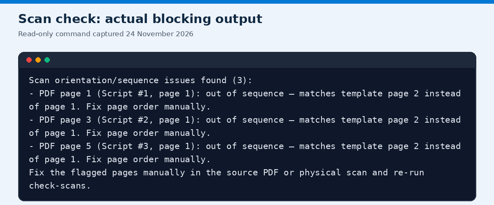

Getting the image right: scans, crops and alignment
Part 4 of 8 · For developers and technical educators

A handwriting model cannot grade content it never receives. In this example, the model's own saved comments repeatedly say that writing is cut off. The useful debugging path starts with pixels and coordinates, not a stronger grading prompt.
This article compares saved page images, saved crop coordinates and the actual grading warnings. It also examines a conservative alignment guard in the source. We do not claim to have repaired or regraded the example during publication preparation.
Step 1: Establish page structure before cropping
The current preflight reports four two-page scripts across eight pages. The subsequent scan check flags possible page-sequence problems on PDF pages 1, 3 and 5.

Figure 1. Real read-only check captured on 24 November 2026. A detector warning requires inspection; it is not proof that page order is definitely wrong.
Do not “fix” an apparent alignment problem before confirming that the compared pages have the same layout. A rigid transform cannot turn a Q4–Q5 page into a Q1–Q3 page.
Suggested diagnostic prompt
Compare the flagged original pages with the expected two-page layout.
Show full pages and the relevant crop boundaries.
Do not modify scans, approvals or saved grading outputs.
That diagnostic comparison is local. The separate optional AI region-proposal operation has a production prompt, reproduced in full in the technical walkthrough below; it should not be confused with the offline scan checker.
Step 2: Put saved coordinates on the saved image
The saved region image is 1654 × 2338 pixels. The first page has NAME, ID, CLASS and three question boxes. Q3 is recorded as:
{
"x": 222,
"y": 1153,
"width": 1191,
"height": 254,
"label": "Q3"
}

Figure 2. Offline annotation overlay using the saved pixel coordinate system. It is not a browser-editor screenshot.
The original PDF-to-PNG exports were rendered at 150 DPI for publication. The grading/region images have their own dimensions. Never apply the 1654-pixel coordinate system directly to a differently sized publication image without scaling.
This is a common source of convincing but incorrect debugging diagrams: the rectangle looks sensible, yet it was drawn on the wrong image scale.
Step 3: Inspect the saved grading image for the flagged student

Figure 3. Saved grading page for script index 2, with a locally drawn Q3 boundary.

Figure 4. Reconstructed saved-coordinate crop. This is not a recorded historical HTTP payload.
The stored answer says:
brain powe[r] to doing [continuation cut off]
The stored moderator note asks the reviewer to verify the continuation. Q1 and Q2 for the same script also mention cut-off text. That pattern suggests investigating page/crop positioning before debating individual mark allocations.
There is an important discrepancy: the reconstructed crop shown here contains a visible “hand-on” continuation that the stored transcription did not capture. We cannot infer the exact historical request image from the current saved image alone. Show both pieces of evidence, and investigate their lineage before claiming that a crop fix succeeded or failed.
The full-page view is essential. If a viewer shows only the same clipped crop at a larger size, it has not supplied the missing evidence.
Step 4: Understand why alignment must be conservative
The alignment implementation estimates translation and a small rotation from four quadrant matches. Handwriting and diagrams can produce correlation peaks unrelated to scanner motion. A proposed correction should explain a shared geometric displacement rather than chase unrelated answer content.
The actual guard is:
residuals = np.hypot(
dx - (tx - theta * py),
dy - (ty + theta * px),
)
if np.count_nonzero((weights > 0.0) & (residuals <= 15.0)) < 3:
return 0.0, 0.0, 0.0
This is a reformatted source excerpt from alignment.py. At least three positively weighted quadrant matches must fit the estimated rigid motion within the 15-pixel threshold. Other checks bound translation and rotation.
Output of a rejected estimate: the function returns zero transform. That is a code contract, not a before/after repair result for this exam. We have not manufactured an alignment success image.
A conservative refusal can protect a correctly positioned identifier from a bad global correction. It cannot guarantee that every accepted correction is right or that handwriting outside the template is recovered.
Step 5: Separate local recovery from paid reassessment
The CLI supports a local realignment option:
handwriting-grader retry-grading --exam /private/exam.yaml \
--align-images
Its help describes re-rendering original PDF pages and preserving previous artifacts. Re-OCR or question regrading has different data/cost implications:
handwriting-grader retry-grading --exam /private/exam.yaml \
--re-ocr-metadata
These are documented command examples, not executions against the article's saved run. Preview and understand the selected action; obtain fresh consent before any paid request. For changed crops requiring a new assessment, use the reviewed crop-proposal/child-run workflow described in the repository.
The full original source should remain available. Repeatedly transforming an already transformed JPEG can compound damage and make comparisons unreliable.
What to check before trusting the next result
Compare the same student, same question and same coordinate scale. Verify that identity fields and neighboring answers have not been displaced. Read the full answer outside the crop when a continuation is suspected. Only then assess whether new inference is needed.
The key output from this investigation is a defensible diagnosis: the saved run contains visible crop concerns and explicit warnings. It is not evidence that a model upgrade alone would improve the grade.
Technical walkthrough: region prompt, coordinate spaces and pixel transforms
The complete optional answer-region prompt
suggestions.build_prompt() inserts the rubric IDs and short question references
into this complete production template from suggestions.PROMPT:
Identify answer and metadata regions on this scanned exam page.
For metadata fields (NAME, ID, CLASS):
- The bounding box MUST enclose the handwritten/input value area (the blank line, box, or write-in space where the student writes), NOT the printed label text (such as "Name:", "Student ID:", or "Class:").
- For NAME: Allocate generous horizontal width across the entire designated answer line/blank to accommodate variable student name lengths.
- For ID and CLASS: Enclose the complete write-in area or box designated for the student's ID and class.
- Use exact labels "NAME", "ID", and "CLASS".
For question answer areas:
- Expected question IDs from the marking rubric: {question_ids}.
{question_details}- Return ONE bounding box enclosing the complete student answer area/table for each expected question ID that appears on this page.
- Use ONLY the exact question ID labels listed above. Do NOT invent, rename, or subdivide labels beyond that list.
- Do not include printed question instructions or titles in the answer box.
Coordinates must use a normalized 0-to-1000 scale: x and y are the top-left corner, and width and height are the box dimensions. Ensure all boxes lie entirely inside the page. Return an empty list if no regions can be identified.
question_details includes its own trailing newline when present. Asking for the
write-in value rather than the printed label directly addresses the observed
name/class problem. Exact rubric labels allow Python to reconcile proposed
regions with expected questions; they do not guarantee the box contains every
line of handwriting.
The optional operation sends each template page as a JPEG ImagePart, asks for
SuggestedBoxes, and rejects negative coordinates, nonpositive dimensions or
boxes extending beyond 1000. It writes a separate ai_suggestions.json;
it does not approve or silently replace the reviewed annotation draft.
Not captured here: a fresh proposal request or its raw response. The saved
pixel boxes and overlays above are actual review artifacts, not proof of their
initial creation route.
Normalized coordinates are converted at the edges
This is the actual conversion code:
left = round(box.x * page["width"] / 1000)
top = round(box.y * page["height"] / 1000)
right = round((box.x + box.width) * page["width"] / 1000)
bottom = round((box.y + box.height) * page["height"] / 1000)
The saved pixel width is right - left, not a separately rounded normalized
width. This keeps both edges consistent. Metadata labels are retained only on
the first template page; all proposed annotations undergo local validation.
The actual publication dimensions are 1241 × 1754 for the original-page export, 1654 × 2338 for the region overlay, and 1191 × 254 for the Q3 crop. Drawing a region onto the publication export requires separate horizontal and vertical scale factors:
sx = display_width / original_width
sy = display_height / original_height
display_box = (
round(x * sx),
round(y * sy),
round((x + width) * sx),
round((y + height) * sy),
)
This is an explanatory display calculation, not the production crop function.
For Q3, the original pixel edges are (222, 1153, 1413, 1407). Mixing those
coordinates with the 150-DPI publication export would diagnose the wrong region.
The exact bytes supplied for an answer crop
The production grading.crop_image() is short enough to show completely:
def crop_image(path, box):
with Image.open(path) as image:
x, y = box["x"], box["y"]
crop = image.crop((x, y, x + box["width"], y + box["height"]))
crop = ImageEnhance.Sharpness(crop).enhance(3)
buffer = io.BytesIO()
crop.save(buffer, format="PNG")
return buffer.getvalue()
Pillow's crop edges are left/top inclusive and right/bottom exclusive. The
sharpness enhancement changes pixels inside the selected area; it cannot recover
text outside that area. The returned PNG bytes become an ImagePart, then a
base64 image content part in the Azure request. The publication reconstruction
illustrates geometry but is not a byte-for-byte capture of a historical
sharpened request payload.
Why FFT correlation is used, and why it can be rejected
The registration algorithm first downsamples twofold, converts grayscale to ink
intensity with 255 - pixel, and removes weak intensities below 35. For each
quadrant it applies a Hanning window, then computes:
fa = np.fft.rfft2(ref_patch * win)
fb = np.fft.rfft2(cur_patch * win)
cross_power = fa * np.conj(fb)
cross_power /= np.maximum(np.abs(cross_power), 1e-8)
cc = np.fft.irfft2(cross_power, s=ref_patch.shape)
Normalizing the cross-power emphasizes a common displacement rather than absolute
brightness. The correlation peak supplies a wrapped displacement, multiplied by
two to return to full-resolution pixels. Four quadrant displacements estimate
translation and a small rotation around the page center. The predicted motion is
dx = tx - theta * py, dy = ty + theta * px; the residual guard above requires
at least three positively weighted matches to agree within 15 full-resolution
pixels. Translation is bounded by 150 pixels and rotation by five degrees.
An accepted transform is applied to the image with an inverse affine map and bicubic interpolation. It does not move a Q3 box onto a Q4 page or infer missing handwriting. A rejected estimate returns zero motion. Actual observed outcome for this article: crop/sequence concerns remain; no repaired grading run is claimed.
Next: follow a crop through Azure OpenAI and Python validation.
Reproduce this article's AI banner: full prompt, code and output
The banner is a separate illustration task, not an image of a running grader or evidence that an assessment succeeded. Its article title, description, visual metaphor, palette and composition are all in the complete actual submitted prompt below. No reference images or official logos were sent in this request.
Stage A: the actual Azure image prompt
Create a visually arresting premium editorial cover illustration for a Microsoft technical blog, not a slide, diagram or screenshot.
Article title: Getting the image right: scans, crops and alignment.
Description: A grading model cannot evaluate content missing from its image. Developers inspect full pages, crop coordinates, clipped-answer warnings and conservative alignment before considering stronger prompts.
Creative concept: THE OPTICAL CUT. On the LEFT, a huge crystal-clear optical lens intersects a single floating ivory page at a dynamic angle. Behind it, three thin translucent rectangular crop frames are slightly misaligned; the lens brings their edges into precise alignment while leaving the whole page visibly present. Tiny abstract ink strokes remain contained within the page rather than falling off a crop. Exquisite macro optics, teal light refracting through glass, emerald-to-black background, a small sunset-orange reflection. The lens and clean frame edges are the unmistakable focal silhouette.
Visually adventurous scientific-editorial photography with cinematic depth and beautiful optical caustics. No classroom, hands, computer screen, labeled arrows or generic camera product shot. Do not resemble the human review magnifying-glass scene: this is a suspended technical optical sculpture with geometric crop frames, no people.
Composition: put the optical sculpture in the LEFT 55 percent; leave the RIGHT 42 percent deep teal-black and quiet for large typography added later. Essential lens and page edges must fit inside the central horizontal band of a 1536x1024 canvas, approximately y=190 to y=830, for a wide 1200x515 crop. Full-bleed, no borders.
No titles, letters, legible handwriting, numbers, logos, badges, watermarks, interfaces or fabricated scan-check results. Paper marks are abstract. This is conceptual editorial art, not an actual exam capture. Prioritize arresting optics, spatial depth and thumbnail clarity.
This prompt's retained source is branding/prompts/04.txt. Asking for no
rendered words leaves typography to local code; the quiet side reserves space
for the headline. The image-size/crop instructions guide composition but do not
guarantee the model obeys every visual constraint, so the result was inspected.
Stage B: preview and the real API boundary
Use the independent image-generation repository's own environment and a newly reviewed private Azure configuration. The following command is an offline preview example, not a paid request executed while rebuilding this article:
"/path/to/azure-image-generation-skills/.venv/bin/azure-image" \
--model-config /private/image.config.yaml \
--prompt-file "/path/to/azure-handwriting-grader-skills/docs/blog-series/branding/prompts/04.txt" \
--output-dir /private/new-banner-part-04
Paid execution adds --confirm-cost only after explicit approval for one request.
The attempt directory must be new. Pricing is checked before SDK construction
and again at this actual source method from the independent tool:
def generate(self, prompt):
self.verifier.verify()
return self.sdk.with_options(max_retries=0).images.generate(
model=self.settings.model, prompt=prompt, size=IMAGE_SIZE,
quality=IMAGE_QUALITY, n=1,
)
IMAGE_SIZE is 1536x1024 and IMAGE_QUALITY is auto. n=1 requests one
image; SDK and per-call retries are disabled. The SDK returns inline base64
image data. The tool decodes it, verifies PNG format and exact dimensions, saves
the original and keeps private usage/price journals. The published method
excerpt is from
image-tool commit ee6c616;
it is not a standalone script and is not installed as part of the grader.
Observed output for this article: one successful text-to-image request using
gpt-image-2.5-sunburst, with estimated cost US$0.006635.
This is historical usage evidence, not a guaranteed future quote or an invoice.
Banner stage B output. A metadata-free JPEG publication derivative of the actual 1536 x 1024 generated PNG, before local typography and logos; not a fabricated application screenshot.
Stage C: preserve the scene, then add exact words and retained brand assets
The publication builder creates a blurred background extension and fits the complete generated scene without stretching it. Its relevant Pillow excerpt is:
full_scene = ImageOps.contain(artwork, hero.size, Image.Resampling.LANCZOS)
hero.paste(full_scene, (x, 0), mask)
hero is the upper banner canvas, x anchors the scene opposite the headline,
and mask feathers the quiet edge into the background. The builder varies
left/right placement and light/dark text by article. ImageDraw.text() writes
the exact headline; the four retained brand assets are resized proportionally
and composited into a separate strip. AI is not asked to redraw those marks.
Final output: the 1200 x 630 PNG shown at the top,
plus a 2400 x 1260 JPEG layout master. The larger master upscales layout and
artwork; it is not newly generated high-resolution detail. Original PNG and
submitted-prompt hashes are retained in branding/artwork-provenance.json.
Local composition source and
brand-source/permission caveats are included.
Rebuilding Markdown/HTML, JPEG derivatives and banners is local work. It does not regenerate artwork, refresh prices or authorize any new paid operation.
Implementation reference: alignment implementation at the inspected revision.